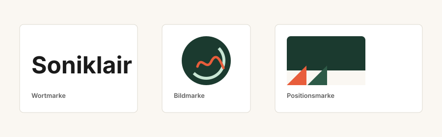

Wortmarke
Soniklair ist eine frei erfundene Wortschöpfung aus Klangbezug und klarer Struktur. Die Wortwahl vermeidet direkte Anlehnung an bekannte Audio- oder Transkriptionsdienste.
Soniklair Systems GmbH entwickelt in Wien Software, die Audioquellen in recherchierbares Wissen verwandelt.
Standort: Neubaugasse 44/3, 1070 Wien, Österreich
Mitarbeiter: 14 Personen in Produktentwicklung, Design, Vertrieb und Support.
Softwareprodukt: Soniklair Studio als Business-Anwendung für Transkription, Kapitel, Sprecherhinweise, Clips und Audio-Recherche.
Geschäftsmodell: Freemium-Testphase mit monatlichen SaaS-Abos. Unternehmen können zusätzlich Enterprise-Kontingente kaufen.
Zielgruppe: Redaktion, Forschung, Lehre, Podcast-Produktion, Beratung und Produktteams.

Soniklair ist eine frei erfundene Wortschöpfung aus Klangbezug und klarer Struktur. Die Wortwahl vermeidet direkte Anlehnung an bekannte Audio- oder Transkriptionsdienste.
Der Kreis steht für wiederverwendbares Wissen, die Wellenlinie für Sprache. Die Form ist abstrakt und nicht an bekannte Audio-Logos angelehnt.
Die zweifarbige Signal-Ecke wird immer links unten auf Softwarekarten und Exporten platziert. Sie markiert Herkunft und Wiedererkennbarkeit.
Wortmarke, Bildmarke und Positionsmarke erfüllen unterschiedliche Rollen im Auftritt. Zusammen sichern sie Wiedererkennbarkeit in Produkt, Website und Exporten.
| Klasse | Begründung |
|---|---|
| 9 | Herunterladbare Software, mobile Apps und gespeicherte Softwarekomponenten. |
| 38 | Bereitstellung und Übertragung digitaler Audio- und Kommunikationsinhalte. |
| 41 | Erstellung und Bereitstellung von Bildungs- und Wissensinhalten aus Audioquellen. |
| 42 | Software as a Service, KI-gestützte Transkription, Hosting und technische Analyse. |
| Prüfpunkt | Ergebnis |
|---|---|
| Wortwahl | „Soniklair” ist als Kunstwort gewählt und vermeidet beschreibende Begriffe wie Transkript, Podcast oder Audio direkt im Markennamen. |
| Bildwahl | Die Bildmarke verwendet eine abstrakte Kreiswelle und keine kopierte Produkt-, Plattform- oder Hoheitsgrafik. |
| Farb- und Positionswahl | Grün-Koralle-Kontrast und linke untere Signal-Ecke werden als wiederkehrende Gestaltung festgelegt, ohne bekannte Positionszeichen nachzubilden. |
| Registerprüfung | Für diese Beispielumgebung wurde am 17. Mai 2026 eine fiktive Recherche in TMview (EU-weit), EUIPO eSearch (Klassen 9, 38, 41, 42), Madrid Monitor (internationale Registrierungen) und im österreichischen Markenregister des Österreichischen Patentamts (see-ip.patentamt.at, nationale Marken gemäß § 17 MSchG) durchgeführt. Geprüfte Begriffe: „Soniklair”, „Soniklair Studio”. Fiktives Ergebnis: Keine identischen oder hochgradig verwechslungsfähigen Eintragungen gefunden. Hinweis: Für eine reale Anmeldung oder Nutzung bleibt eine professionelle Markenrechtsberatung erforderlich. |